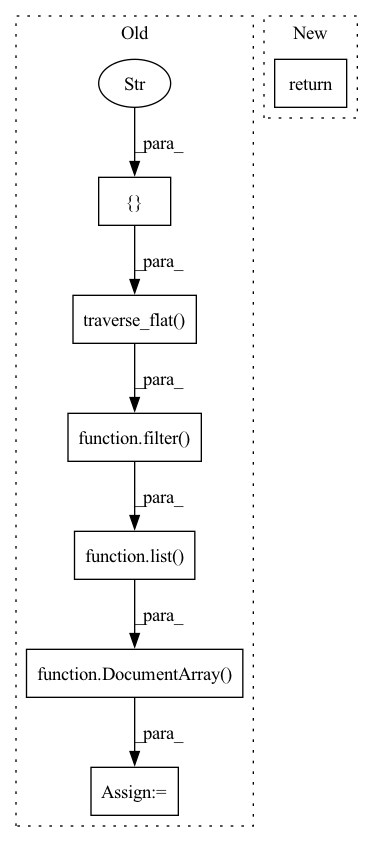

Pattern ID :29447

Before Change
@requests
def encode(self, docs: "DocumentArray", **kwargs):
chunks = DocumentArray(
list(
filter(lambda d: d.mime_type == "text/plain", docs.traverse_flat(["cc"]))
)
)
texts = chunks.get_attributes("text")
with torch.no_grad():
After Change
@filter_docs("text/plain", traversal_path="c")
def encode(self, docs: "DocumentArray", **kwargs):
if docs is None:
return
texts = docs.get_attributes("text")
with torch.no_grad():
In pattern: SUPERPATTERN
Frequency: 3
Non-data size: 7
Instances
Fragment ID: 87391305
Project Name: jina-ai/examples
Commit Name: 8f29ce75fd2854c191a9c1115156552372918ec2
Time: 2021-06-02
Author: sebastian.lettner@jina.ai
File Name: multimodal-search-pdf/flows/executors.py
M Class Name: TextEncoder
N Class Name: TextEncoder
M Method Name: encode(2)
N Method Name: encode(2)
M Parent Class: Executor
N Parent Class: Executor
M File Name: multimodal-search-pdf/flows/executors.py
N File Name: multimodal-search-pdf/flows/executors.py
M Start Line: 233
M End Line: 237
N Start Line: 238
N End Line: 241
'>
Before Change
@requests
def normalize(self, docs: DocumentArray, **kwargs):
chunks = DocumentArray(
list(
filter(lambda doc: doc.mime_type.startswith("image"), docs.traverse_flat(["c"]))
)
)
for doc in chunks:
raw_image = helper.load_image(doc.blob, self.channel_axis)
_img = self._normalize(raw_image)
_img = helper.move_channel_axis(_img, -1, self.target_channel_axis)
After Change
_img = self._normalize(raw_image)
_img = helper.move_channel_axis(_img, -1, self.target_channel_axis)
doc.blob = _img
return docs
def _normalize(self, img):
img = helper.resize_short(img, target_size=self.resize_dim)
'>
Fragment ID: 87391307
Project Name: jina-ai/examples
Commit Name: 8f29ce75fd2854c191a9c1115156552372918ec2
Time: 2021-06-02
Author: sebastian.lettner@jina.ai
File Name: multimodal-search-pdf/flows/executors.py
M Class Name: ImagePreprocessor
N Class Name: ImagePreprocessor
M Method Name: normalize(2)
N Method Name: normalize(2)
M Parent Class: Executor
N Parent Class: Executor
M File Name: multimodal-search-pdf/flows/executors.py
N File Name: multimodal-search-pdf/flows/executors.py
M Start Line: 166
M End Line: 176
N Start Line: 180
N End Line: 180
'>
Before Change
@requests
def encode(self, docs: DocumentArray, **kwargs):
chunks = DocumentArray(
list(
filter(lambda d: d.mime_type.startswith("image"), docs.traverse_flat(["r"]))
)
)
images = np.stack(chunks.get_attributes("blob"))
images = self._maybe_move_channel_axis(images)
_input = torch.from_numpy(images)
After Change
@filter_docs("image", traversal_path="r")
def encode(self, docs: DocumentArray, **kwargs):
if docs is None:
return
images = np.stack(docs.get_attributes("blob"))
images = self._maybe_move_channel_axis(images)
'>
Fragment ID: 87391306
Project Name: jina-ai/examples
Commit Name: 8f29ce75fd2854c191a9c1115156552372918ec2
Time: 2021-06-02
Author: sebastian.lettner@jina.ai
File Name: multimodal-search-pdf/flows/executors.py
M Class Name: ImageTorchEncoder
N Class Name: ImageTorchEncoder
M Method Name: encode(2)
N Method Name: encode(2)
M Parent Class: Executor
N Parent Class: Executor
M File Name: multimodal-search-pdf/flows/executors.py
N File Name: multimodal-search-pdf/flows/executors.py
M Start Line: 326
M End Line: 330
N Start Line: 330
N End Line: 333